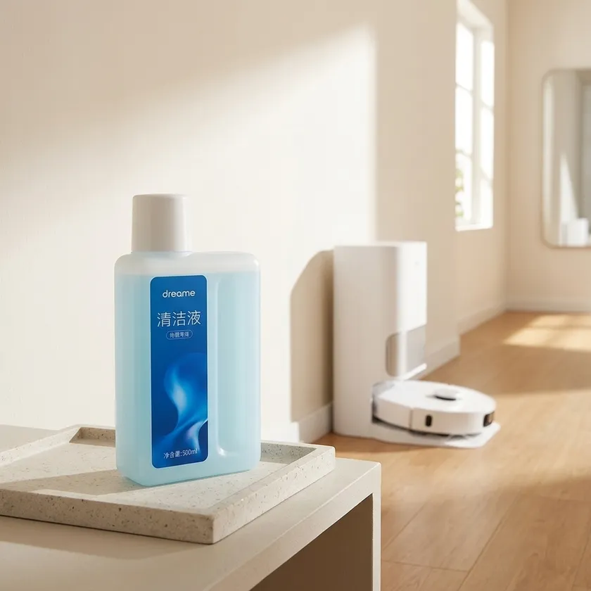
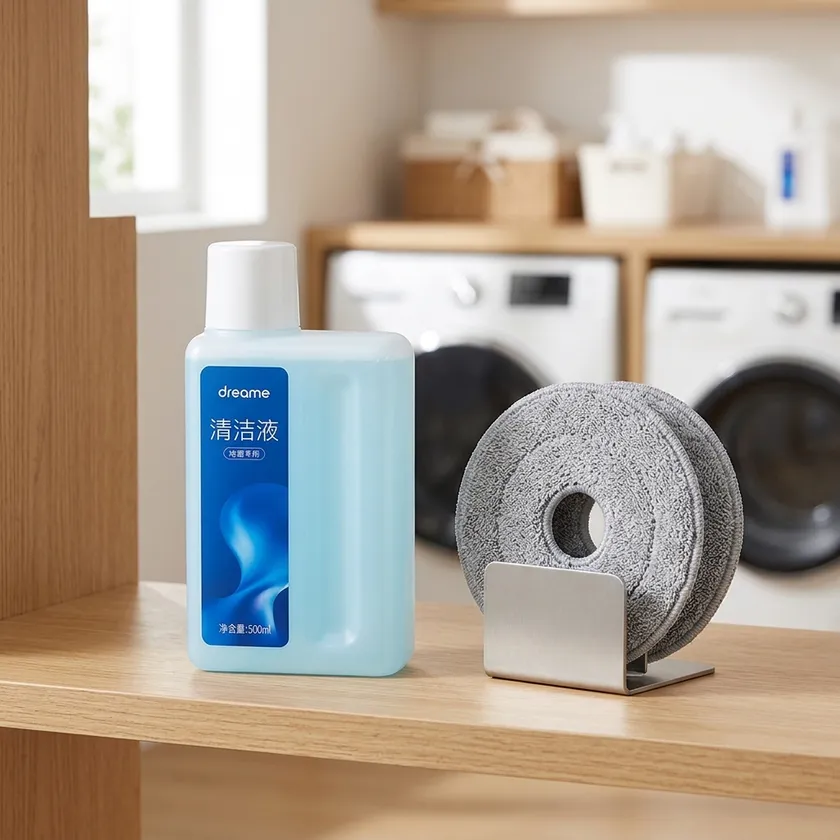
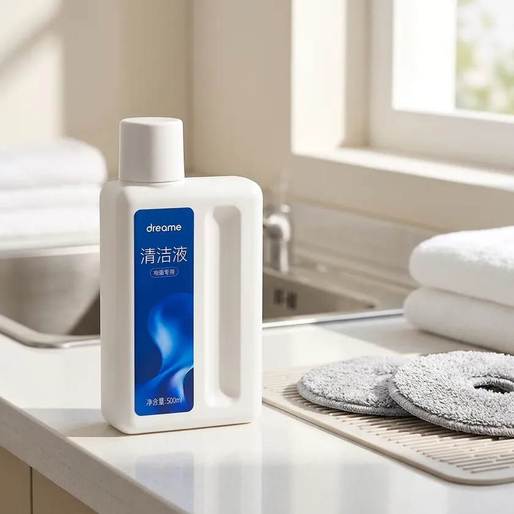

드리미 (Dreame)
드리미 로봇청소기 세제 500ml 개봉 후 보관법과 1병·2병 선택 가이드
글·구성: 제이상점 · 기종별 1:1 호환 실물 점검 · 교체 주기 비교표 · 스마트스토어 패키지 안내

핵심 관리 · 선택 체크포인트
- 드리미 로봇청소기 도크에서 물걸레 온수·자동 세척을 자주 돌리는 가정이라면 한 병이 생각보다
- 한 손에 잡히는 500ml 측면 손잡이 용기와 스테이션 주변 보관: 드리미 전용 세척액은 용기 옆면에 일체형 손잡이 홈이 들어가 있고 반투명 몸체로 내부의 연푸른 세정액 잔량이 바로 비치는 것이 특징입니다.
- 드리미 전용 세척액 500ml 필수 옵션 비교: 드리미 전용 세정제는 한 손으로 잡고 따르기 편한 500ml 측면 손잡이 용기 규격(모델 AWH6 등)을 사용합니다.
- 개봉한 병은 직사광선을 피해 서늘한 다용도실 선반에 세워 보관하고, 캡 주변에 묻은 액체를 가볍게 닦아 닫아 두면 깔끔하게 유지됩니다.
- 원형 회전 물걸레 패드 교체·건조 날에 세제 여분까지 확인하기: 원형 회전 걸레 패드 2매를 분리해 세탁실 거치대에서 말리거나 새 패드로 교대할 때 수납함 속 예비 세척액이 남아 있는지 함께 살펴보면 소모품 관리 주기를 한 번에 맞출 수 있습니다.
실물 부품 디테일 · 관리 구성 이미지




부품 규격 · 점검 기준표
| 필수 옵션명 | 병당 용량·수량 | 선택 기준 |
|---|---|---|
| 1병 | 500ml 1병 | 현재 세제통을 1회 보충하며 사용량을 먼저 가늠해 볼 때 |
| 2병 (복수구매할인) | 500ml 2병 (총 1,000ml) | 500ml 한 병 소진 후 바로 이어 쓸 예비 병까지 함께 챙길 때 |
💡 교체 주기가 겹치는 필터·브러시·물걸레·더스트백은 단품 배송비를 여러 번 내기보다 드리미 세제 기간별 세트(3개월·6개월·1년)로 미리 구비해 두면 물세척 후 24시간 교대 건조까지 끊김 없이 관리할 수 있습니다.
자주 묻는 질문 (FAQ)
Q. 드리미X50세제의 1병 규격과 관리 기준은 무엇인가요?
A. 500ml 1병 규격을 사용하며, 현재 세제통을 1회 보충하며 사용량을 먼저 가늠해 볼 때 기준으로 점검·교체하면 청소 효율을 안정적으로 유지할 수 있습니다.
Q. 드리미X50세제의 2병 (복수구매할인) 규격과 관리 기준은 무엇인가요?
A. 500ml 2병 (총 1,000ml) 규격을 사용하며, 500ml 한 병 소진 후 바로 이어 쓸 예비 병까지 함께 챙길 때 기준으로 점검·교체하면 청소 효율을 안정적으로 유지할 수 있습니다.
제이상점 1:1 검수 추천 패키지 · 구매 안내
☑️ 주문 전 확인해 두면 좋은 제이상점 안심 포인트
· 기종별 1:1 전용 규격 검수: 모델명·연식에 맞는 호환·정품 구성을 검수해 오주문 불안을 줄였습니다.
· 해외직배송 미리 주문 팁: 중국 구매대행·해외직배송 상품이므로 마지막 여분 1개를 꺼내 쓰는 시점에 개인통관고유부호와 함께 여유 있게 주문해 두시면 훨씬 경제적인 비용으로 끊김 없이 교체하실 수 있습니다.
· 기종별 1:1 전용 규격 검수: 모델명·연식에 맞는 호환·정품 구성을 검수해 오주문 불안을 줄였습니다.
· 해외직배송 미리 주문 팁: 중국 구매대행·해외직배송 상품이므로 마지막 여분 1개를 꺼내 쓰는 시점에 개인통관고유부호와 함께 여유 있게 주문해 두시면 훨씬 경제적인 비용으로 끊김 없이 교체하실 수 있습니다.
📖 더 많은 가정 내 사용 스토리와 상세 후기가 궁금하시다면
📱 네이버 블로그 모바일 원문 보기 ↗